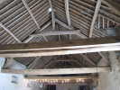
La ferme de Marolles ( http://www.ferme-de-marolles.com/ ), au sud d'Epernon, une très vieille et énorme ferme. Les charpentes sont magnifiques, et les propriétaires restaurent l'ensemble petit à petit... Ils ont organisé une fête qui va bien nous changer des festivals habituels...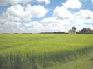
En face, des champs démesurés de blé, d'orge, de lin, de colza...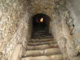
Récemment découvert et curé (à la main, avec une chaîne de seaux le long des 38 marches !), ce souterrain (j'adore les souterrains) dont le but n'est pas très net : cachette contre des pillards (mais pourquoi si profond ?), garde-manger ? départ d'un souterrain plus long et à découvrir ?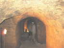
En bas, un couloir, pas très long et des alcôves de quelques 2 m de chaque côté, avec de belles voûtes régulières et enduites...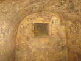
Les alcôves sont un peu bizarres, certaines ont des margelles de chaque côté, comme des bancs, et une fenêtre au fond ! (ou un placard ?)...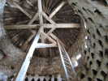
La ferme possède aussi, signe de richesse et de pouvoir, un beau pigeonnier ancien, dans une tour ronde, avec beaucoup de boulins (en principe 1/2 hectare de terres par boulin !) et l'échelle rotative classique !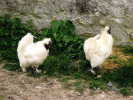
Dans la cour, les belles poules nègres-soie au plumage angora courent en liberté, mais aujourd'hui, on les a mises au poulailler, sinon les enfants les traumatisent en courant après !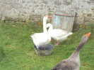
A l'entrée, des oies manifestent leur hostilité aux visiteurs, cous tendus et coups de bec prêts !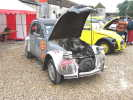
Dans la cour, rassemblement de 2CVs ! Celle-ci est allée jusqu'en Chine par la route, au prix d'un peu de préparation et d'un châssis renforcé en route...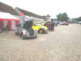
Les autres sont de différentes époques, mais toutes roulent et sont venues par leurs propres moyens...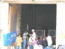
Dans une des nombreuses remises de la ferme, exposition des divers grains récoltés : blé, orge, lin, etc... Dans une autre, initiation au tir à l'arc...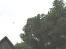
Le samedi, il n'y a que François et moi, on fait volume, François a déjà un cerf-volant à la main et un dont la ligne est prise dans un arbre...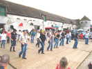
Et sur un plancher spécialement installé, toute la journée, initiation et pratique de la Country Dance !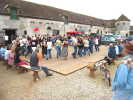
Pas d'ensemble, ou jolies rondes, il y en a pour tous les goûts !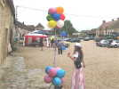
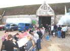
A midi, nous avons été invités au déjeuner. Ce soir, idem, mais il faut apporter sa grillade et s'en occuper. Mais il y a pléthore de hors-d'oeuvres et de desserts !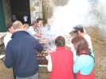
On se bouscule autour du vaste barbecue pour retourner sa côtelette !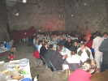
La pluie est arrivée, tout le monde est rentré dans la grange avec son assiette, son verre, sa grillade et sa chaise...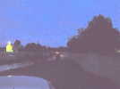
Après le repas, nous nous proposions de faire un petit vol de nuit, François avait amené son projecteur personnel, mais avec la météo... La pluie s'arrête, les habitués lancent un défilé aux lampions autour de la ferme, il y aura même une montgolfière papier lancée par... un pompier !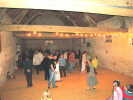
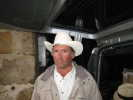
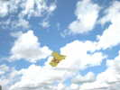
Dimanche matin, nous recevons le renfort d'autres cervolistes. Pascal Pavel fait voler le T-shirt de ses XL années...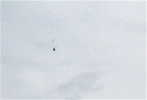
Mais à qui appartient cette nacelle qui nous survole ?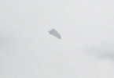
Jean-Claude Veillerobe fait de même sous son pseudo-rokkaku ! Il a aussi monté son grand mât sur trépied pour des photos plus rapprochées... Bien sûr, Christophe n'a pas non plus manqué l'occasion...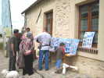
L'Expo de l'Antenne de Beauce montée sur la table de François a aussi intéressé beaucoup de gens, avec les réalisations nombreuses et variées de ses membres !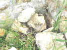
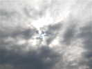
Le vent étant faible, je veux terminer l'après-midi tranquillement avec mon Goéland léger... Mais un vilain nuage et son coup de vent m'obligent à nouveau à faire le tour du champ d'orge !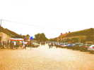
Il y a eu pas mal de public cet après-midi, dans la cour de la ferme ! Mais il y a aussi de nombreux restes que le patron nous invite à finir avec les organisateurs, merci...